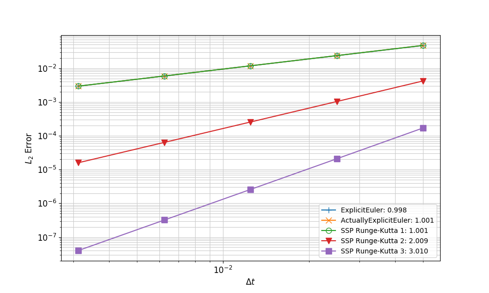

- orderOrder of time integration
C++ Type:MooseEnum
Controllable:No
Description:Order of time integration
ExplicitSSPRungeKutta
Introduction
This time integrator includes explicit Strong Stability Preserving (SSP) Runge-Kutta time integration methods, of orders 1, 2, and 3, deriving from ExplicitTimeIntegrator, meaning that no nonlinear solver is invoked. The key feature of SSP Runge-Kutta methods is that they preserve the strong stability properties (in any norm or seminorm) of the explicit/forward Euler method Gottlieb (2005).
Formulation
For the ODE the SSP Runge-Kutta methods up to order 3 can be expressed in the following form for a time step: where is the number of stages and for methods up to order 3, is also the order of accuracy. The coefficients , , and can be conveniently expressed in the following tabular form: Respectively, the tables for the methods of orders 1, 2, and 3 are as follows: These methods have the following time step size requirement for stability: where is the maximum time step size for stability of the forward Euler method. For these methods of order 1, 2, 3, .
In MOOSE, generally the system of ODEs to be solved result from discretization using the finite element method, and thus a mass matrix exists: In this case, the stage solution is actually the following: As an implementation note, the usual mass matrix entry is However, in MOOSE, the mass matrix includes the time step size: (1)
Dirichlet Boundary Conditions Treatment
Now consider the case where one or more degrees of freedom are subject to strong (Dirichlet) boundary conditions: For a nonlinear solve with Newton's method, each iteration consists of the solution of a linear system: (2) and then updating the solution: In MOOSE, Dirichlet boundary conditions are implemented by modifying the residual vector to replace entries for the affected degrees of freedom: By modifying the Jacobian matrix as follows, one can guarantee that the boundary conditions are enforced, i.e., for : To work with MOOSE's Dirichlet boundary condition implementation, Eq. (1) must be put in an update form, similar to Eq. (2): (3) (4) To impose the Dirichlet boundary conditions, the mass matrix and right-hand side vector are modified as for the Newton case: (5) where is an appropriate value to impose for degree of freedom in stage . For most cases, this is simply However, in general, certain conditions must be enforced on the imposed boundary values for intermediate stages to preserve the formal order of accuracy of the method. For methods up to order 2, it is safe to impose each stage as shown above. For the 3rd-order method, the boundary values imposed in each stage should be as follows, according to Zhao and Huang (2019):
The convergence rates for a MMS problem with time-dependent Dirichlet boundary conditions is shown in Figure 1. This illustrates the degradation of the 3rd-order method to 1st-order accuracy in the presence of time-dependent Dirichlet boundary conditions. Contrast this to Figure 2, which shows the results for an MMS problem without time-dependent Dirichlet boundary conditions, demonstrating the expected orders of accuracy.

Figure 1: Convergence rates for SSPRK methods on an MMS problem with time-dependent Dirichlet boundary conditions

Figure 2: Convergence rates for SSPRK methods on an MMS problem without time-dependent Dirichlet boundary conditions
Implementation
Eq. (3) is implemented as described in the following sections:
computeTimeDerivatives()
Only the Jacobian _du_dot_du is implemented, which is needed by the mass matrix. The time derivative itself is not needed because only part of it appears in the residual vector.
solveStage()
First the mass matrix is computed by calling computeJacobianTag() with the time tag. Because the mass matrix is computed before the call computeResidual(), the call to computeTimeDerivatives() must be made before computeJacobianTag(), even though it will be called again in computeResidual(). The Jacobian must be computed before the call to computeResidual() because the mass matrix will be used in computeResidual() via the call to postResidual(). In computeResidual(), the following steps occur:
postResidual()
Here is assembled as shown in Eq. (4). The mass matrix product here is responsible for the need to call computeJacobianTag() before computeResidual() in solveStage().
Input Parameters
- solve_typeconsistentThe way to solve the system. A 'consistent' solve uses the full mass matrix and actually needs to use a linear solver to solve the problem. 'lumped' uses a lumped mass matrix with a simple inversion - incredibly fast but may be less accurate. 'lump_preconditioned' uses the lumped mass matrix as a preconditioner for the 'consistent' solve
Default:consistent
C++ Type:MooseEnum
Controllable:No
Description:The way to solve the system. A 'consistent' solve uses the full mass matrix and actually needs to use a linear solver to solve the problem. 'lumped' uses a lumped mass matrix with a simple inversion - incredibly fast but may be less accurate. 'lump_preconditioned' uses the lumped mass matrix as a preconditioner for the 'consistent' solve
Optional Parameters
- control_tagsAdds user-defined labels for accessing object parameters via control logic.
C++ Type:std::vector<std::string>
Controllable:No
Description:Adds user-defined labels for accessing object parameters via control logic.
- enableTrueSet the enabled status of the MooseObject.
Default:True
C++ Type:bool
Controllable:No
Description:Set the enabled status of the MooseObject.
Advanced Parameters
References
- Sigal Gottlieb.
On high order strong stability preserving runge-kutta and multi step time discretizations.
Journal of Scientific Computing, November 2005.
doi:10.1007/s10915-004-4635-5.[BibTeX]
- Weifeng Zhao and Juntao Huang.
Boundary treatment of implicit-explicit Runge-Kutta method for hyperbolic systems with source terms.
arXiv e-prints, pages arXiv:1908.01027, Aug 2019.
arXiv:1908.01027.[BibTeX]